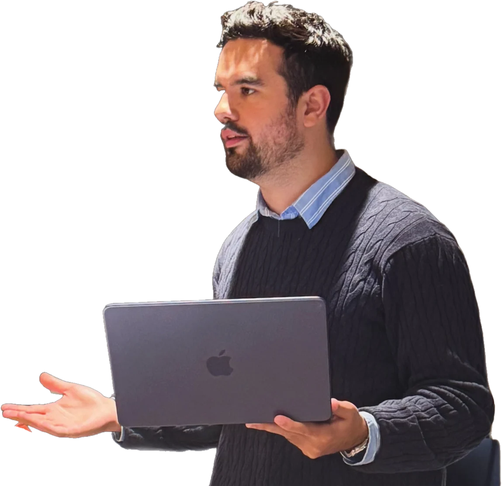
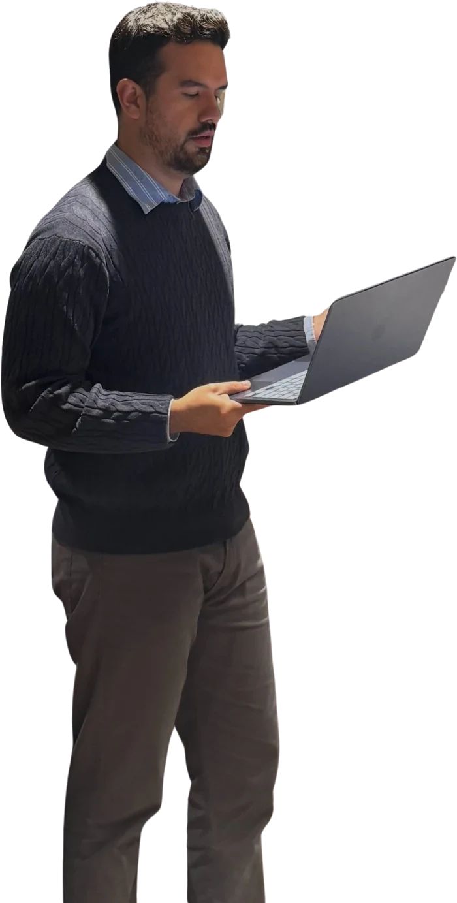
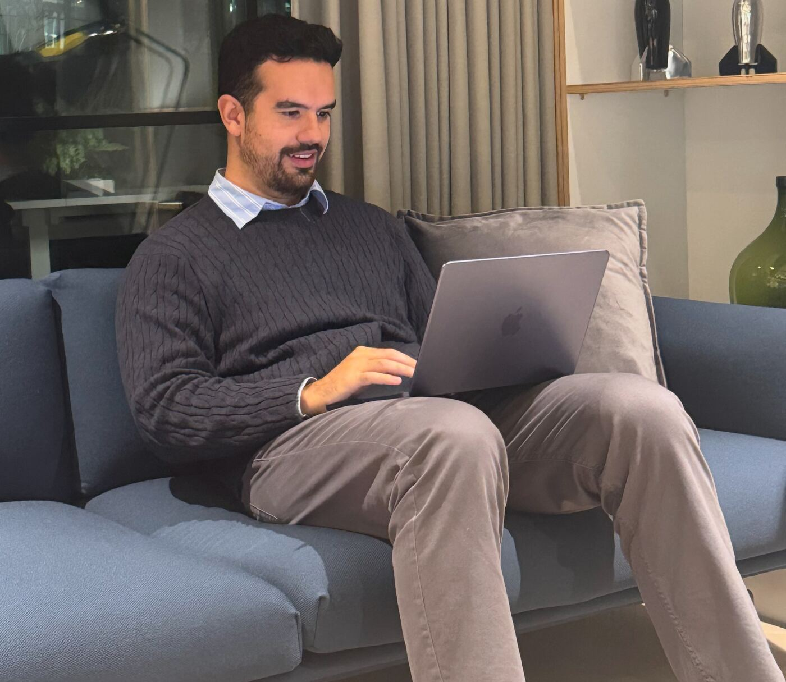

<title>Avanza con Gabriel</title>
<meta name="claude:viewport-fit-sides" content="cover">
<meta name="description" content="Sesiones 1:1 de CV y preparación de entrevistas con Gabriel Forero, 8 años en Big Tech. En español o en inglés.">
<style>
@font-face{font-family:"Bricolage";src:url("assets/fonts/bricolage.woff2") format("woff2");font-weight:200 800;font-stretch:75% 100%;font-display:swap}
@font-face{font-family:"Literata";src:url("assets/fonts/literata.woff2") format("woff2");font-weight:200 900;font-display:swap}
@font-face{font-family:"Literata";src:url("assets/fonts/literata-italic.woff2") format("woff2");font-weight:200 900;font-style:italic;font-display:swap}

/* Layout: la web aplica la guía de Gabriel. Fondo azul marino (la portada de su guía),
   hojas de papel blanco encima con texto de CV en Literata, y el rotulador verde azulado
   subrayando palabras clave como hace un reclutador. Una sola marca: el rotulador. */
:root{
  --navy:#0F1E3D;      /* portada de su guía */
  --navy-deep:#0A1630;
  --paper:#FFFFFF;
  --desk:#E6E9EE;      /* gris escritorio, con un punto de azul */
  --rule:#CDD3DD;
  --ink:#121A2C;
  --slate:#566176;
  --slate-on-navy:#9EAAC0;
  --teal:#1FA38A;      /* la raya de acento de su guía */
  --teal-ink:#127763;
  --marker:rgba(31,163,138,.32);
  --f-head:"Bricolage", "Arial Narrow", "Helvetica Neue", Arial, sans-serif;
  --f-paper:"Literata", Georgia, "Times New Roman", serif;
  --gl:max(16px, env(safe-area-inset-left, 0px));
  --gr:max(16px, env(safe-area-inset-right, 0px));
  --e1:clamp(56px,8vw,112px);
  color-scheme:light;
}
*{box-sizing:border-box}
html{scroll-behavior:smooth}
body{margin:0;background:var(--navy);color:var(--ink);font-family:var(--f-head);font-size:17px;line-height:1.55;font-variation-settings:"opsz" 14;-webkit-font-smoothing:antialiased;text-rendering:optimizeLegibility}
body::before{content:"";position:fixed;inset:0 0 auto;height:env(safe-area-inset-top,0px);z-index:40;background:var(--navy)}
img{max-width:100%;height:auto;display:block}
a{color:inherit}
p,h1,h2,h3,figure,blockquote,ol,ul,dl,dd{margin:0}
:focus-visible{outline:2px solid var(--teal);outline-offset:3px}
.wrap{max-width:1180px;margin:0 auto;padding-left:var(--gl);padding-right:var(--gr)}
h1,h2,h3{font-family:var(--f-head);text-wrap:balance;font-weight:760;font-stretch:82%;letter-spacing:-.02em;font-variation-settings:"opsz" 96}
.paper-font{font-family:var(--f-paper)}

/* rotulador: la única marca de la página */
.mk{background-image:linear-gradient(var(--marker),var(--marker));background-repeat:no-repeat;background-position:0 90%;background-size:100% .45em;-webkit-box-decoration-break:clone;box-decoration-break:clone}
.on-navy .mk{--marker:rgba(31,163,138,.6);background-size:100% .3em;background-position:0 94%}
@media (prefers-reduced-motion:no-preference){
  .js .hero .mk{background-size:0 .3em;animation:mark .55s cubic-bezier(.5,0,.2,1) forwards}
  .js .hero .sheet .mk{background-size:0 .45em;animation-name:mark2}
  .js .hero .mk:nth-of-type(2){animation-delay:.45s}
  .js .hero .mk:nth-of-type(3){animation-delay:.8s}
  .js .hero .sheet .mk{animation-delay:1.15s}
  .js .hero .sheet .mk + .mk{animation-delay:1.4s}
}
@keyframes mark{to{background-size:100% .3em}}
@keyframes mark2{to{background-size:100% .45em}}

/* ---------- barra ---------- */
.top{position:sticky;top:env(safe-area-inset-top,0px);z-index:30;background:var(--navy);color:var(--paper)}
.top .wrap{display:flex;align-items:center;gap:28px;height:68px}
.brand{display:flex;align-items:baseline;gap:7px;text-decoration:none;white-space:nowrap;line-height:1}
.brand b{font-weight:780;font-stretch:80%;font-size:23px;letter-spacing:-.02em;font-variation-settings:"opsz" 48}
.brand i{font-family:var(--f-paper);font-size:17px;color:var(--slate-on-navy)}
.nav{display:flex;gap:24px;margin-left:auto;font-size:15px}
.nav a{text-decoration:none;color:var(--slate-on-navy)}
.nav a:hover{color:var(--paper)}
.lang{display:flex;gap:2px;font-size:13px;font-weight:650;letter-spacing:.06em}
.lang button{all:unset;cursor:pointer;padding:6px 8px;color:var(--slate-on-navy);border-bottom:2px solid transparent}
.lang button[aria-pressed="true"]{color:var(--paper);border-bottom-color:var(--teal)}
.lang button:focus-visible{outline:2px solid var(--teal)}
.top .btn{padding:10px 16px;font-size:15px}

/* ---------- botones ---------- */
.btn{display:inline-flex;align-items:center;gap:10px;text-decoration:none;font-family:var(--f-head);font-weight:650;font-size:16.5px;line-height:1.2;padding:15px 22px;border-radius:2px;border:1.5px solid transparent;cursor:pointer;white-space:nowrap}
.btn svg{width:19px;height:19px;flex:none}
.btn-teal{background:var(--teal);color:#fff}
.btn-teal:hover{background:var(--teal-ink)}
.btn-line{border-color:rgba(255,255,255,.4);color:#fff}
.btn-line:hover{border-color:#fff}
.btn-ink{background:var(--navy);color:#fff}
.btn-ink:hover{background:var(--navy-deep)}

/* ---------- portada ---------- */
.hero{color:var(--paper);overflow:hidden}
.hero .wrap{display:grid;grid-template-columns:minmax(0,1fr) minmax(0,1.02fr);gap:40px;align-items:end;padding-top:clamp(40px,6vw,84px)}
.hero-copy{padding-bottom:clamp(48px,7vw,104px);min-width:0}
.kicker{font-size:14.5px;color:var(--slate-on-navy);display:flex;flex-wrap:wrap;gap:4px 14px}
.kicker span + span::before{content:"·";margin-right:14px;color:var(--teal)}
.hero h1{font-size:clamp(46px,7.4vw,98px);line-height:.94;margin-top:22px}
.hero-lead{font-family:var(--f-paper);font-size:clamp(18px,1.6vw,20.5px);line-height:1.55;color:#D9DFEA;max-width:31em;margin-top:26px}
.ctas{display:flex;flex-wrap:wrap;gap:12px;margin-top:34px}

.desk{position:relative;min-width:0;align-self:end;height:clamp(460px,46vw,600px)}
.sheet{position:absolute;left:0;right:6%;top:9%;bottom:-40px;background:var(--paper);color:var(--ink);transform:rotate(-2.2deg);transform-origin:20% 100%;padding:30px 32px;box-shadow:0 30px 60px -20px rgba(0,0,0,.55)}
.sheet .cv-name{font-family:var(--f-paper);font-size:clamp(24px,2.3vw,30px);font-weight:600;letter-spacing:-.01em;line-height:1.1}
.sheet .cv-line{font-family:var(--f-paper);font-size:13px;color:var(--slate);margin-top:8px;max-width:22em;line-height:1.5}
.sheet .cv-rule{height:1px;background:var(--rule);margin:16px 0 14px;max-width:52%}
.sheet .cv-label{font-size:10.5px;font-weight:700;letter-spacing:.14em;text-transform:uppercase;color:var(--navy)}
.sheet .cv-text{font-family:var(--f-paper);font-size:14px;line-height:1.6;margin-top:6px;max-width:16.5em}
.sheet .note{font-family:var(--f-paper);font-style:italic;font-size:14px;color:var(--teal-ink);margin-top:22px;max-width:14em;line-height:1.35}
.sheet .note::before{content:"";display:block;width:26px;height:2px;background:var(--teal);margin-bottom:8px}
.cutout{position:absolute;right:-4%;bottom:0;width:78%;max-width:none;filter:drop-shadow(0 18px 30px rgba(5,10,25,.35));pointer-events:none}

/* ---------- secciones en papel ---------- */
.page{background:var(--paper);position:relative}
.page.grey{background:var(--desk)}
.sec{padding-block:var(--e1)}
.sec-label{font-size:12.5px;font-weight:700;letter-spacing:.15em;text-transform:uppercase;color:var(--navy);display:flex;align-items:center;gap:12px}
.sec-label::after{content:"";height:1px;background:var(--rule);flex:1;max-width:220px}
.sec h2{font-size:clamp(36px,4.8vw,64px);line-height:.98;margin-top:18px;max-width:14em}

/* resumen */
.resumen .wrap{display:grid;grid-template-columns:minmax(0,.62fr) minmax(0,1fr);gap:clamp(24px,5vw,72px);align-items:end}
.standing{align-self:end;justify-self:center;width:min(100%,330px);margin-bottom:calc(-1 * var(--e1))}
.resumen-copy{padding-bottom:12px;min-width:0}
.summary{font-family:var(--f-paper);font-size:clamp(21px,2.2vw,28px);line-height:1.45;margin-top:22px;max-width:28em;font-weight:400}
.summary .light{color:var(--slate)}
.ledger{display:grid;grid-template-columns:repeat(3,minmax(0,1fr));gap:0;margin-top:40px;border-top:1.5px solid var(--navy)}
.ledger div{padding:14px 18px 0 0;min-width:0}
.ledger dt{font-size:13px;color:var(--slate)}
.ledger dd{font-family:var(--f-head);font-weight:700;font-stretch:85%;font-size:24px;line-height:1.15;margin-top:4px}

/* antes / después */
.ba .wrap{display:grid;grid-template-columns:minmax(0,.8fr) minmax(0,1.2fr);gap:clamp(32px,5vw,72px);align-items:start}
.ba-intro p:not(.sec-label){font-family:var(--f-paper);font-size:18.5px;color:var(--slate);margin-top:20px;max-width:24em}
.switch{display:inline-flex;margin-top:28px;border:1.5px solid var(--navy);border-radius:2px}
.switch button{all:unset;cursor:pointer;font-weight:650;font-size:15.5px;padding:11px 22px;color:var(--navy)}
.switch button[aria-pressed="true"]{background:var(--navy);color:#fff}
.switch button:focus-visible{outline:2px solid var(--teal);outline-offset:2px}
.cvdoc{background:var(--paper);padding:clamp(22px,3vw,40px);border:1px solid var(--rule);box-shadow:14px 14px 0 var(--desk);min-width:0}
.row{display:grid;grid-template-columns:minmax(0,1fr) 120px;gap:20px;padding:18px 0;border-bottom:1px solid var(--rule)}
.row:first-child{padding-top:0}
.row:last-child{border-bottom:0;padding-bottom:0}
.row .cv-label{font-size:10.5px;font-weight:700;letter-spacing:.14em;text-transform:uppercase;color:var(--slate)}
.row .v{font-family:var(--f-paper);font-size:17px;line-height:1.5;margin-top:6px;min-height:3em;overflow-wrap:anywhere}
.row .v.big{font-size:21px;font-weight:600}
.row .why{font-family:var(--f-paper);font-style:italic;font-size:14px;line-height:1.35;color:var(--teal-ink);align-self:center;border-left:2px solid var(--teal);padding-left:10px}
.cvdoc[data-state="antes"] .why{visibility:hidden}
.cvdoc[data-state="antes"] .v{color:var(--slate)}
.ba-foot{font-size:14px;color:var(--slate);margin-top:16px}

/* servicios */
.serv-grid{display:grid;grid-template-columns:minmax(0,1fr) minmax(0,1fr);gap:clamp(32px,5vw,80px);margin-top:44px}
.what h3{font-size:30px;line-height:1.05}
.what p{font-family:var(--f-paper);color:var(--slate);margin-top:10px;max-width:30em}
.what + .what{margin-top:34px;padding-top:34px;border-top:1px solid var(--rule)}
.tarifa{background:var(--navy);color:#fff;padding:clamp(24px,3vw,40px);align-self:start}
.tarifa .cv-label{font-size:11px;font-weight:700;letter-spacing:.15em;text-transform:uppercase;color:var(--slate-on-navy)}
.line{display:flex;align-items:baseline;gap:12px;padding:18px 0;border-bottom:1px solid rgba(255,255,255,.14)}
.line span{font-family:var(--f-paper);font-size:19px}
.line i{flex:1;border-bottom:2px dotted rgba(255,255,255,.3);transform:translateY(-5px)}
.line b{font-weight:760;font-stretch:80%;font-size:46px;line-height:1;font-variant-numeric:tabular-nums;font-variation-settings:"opsz" 96}
.line b small{font-size:22px;color:var(--slate-on-navy);margin-left:3px;font-weight:600}
.tarifa p{font-family:var(--f-paper);font-size:15.5px;color:#D9DFEA;margin-top:18px}
.tarifa .btn{margin-top:22px}
.steps{list-style:none;padding:0;margin-top:clamp(48px,6vw,80px);display:grid;grid-template-columns:repeat(3,minmax(0,1fr));gap:28px;counter-reset:s;position:relative}
.steps li{counter-increment:s;min-width:0;padding-top:58px;position:relative}
.steps li::before{content:counter(s);position:absolute;left:0;top:0;width:40px;height:40px;border-radius:50%;background:var(--paper);border:1.5px solid var(--navy);display:grid;place-items:center;font-weight:700;color:var(--navy)}
.steps li:not(:last-child)::after{content:"";position:absolute;left:52px;right:12px;top:20px;height:1.5px;background:var(--rule)}
.steps strong{display:block;font-size:19px;font-weight:700}
.steps span{display:block;font-family:var(--f-paper);color:var(--slate);font-size:16px;margin-top:4px}

/* guías */
.guia .wrap{display:grid;grid-template-columns:minmax(0,.9fr) minmax(0,1.1fr);gap:clamp(32px,6vw,96px);align-items:center}
.stack{position:relative;height:clamp(360px,36vw,470px);min-width:0}
.pg{position:absolute;width:62%;aspect-ratio:210/297;background:var(--paper);box-shadow:0 18px 40px -18px rgba(10,22,48,.4);padding:7% 7%;overflow:hidden}
.pg:nth-child(1){left:30%;top:4%;transform:rotate(7deg)}
.pg:nth-child(2){left:18%;top:2%;transform:rotate(2deg)}
.pg:nth-child(3){left:4%;top:0;transform:rotate(-4deg);background:var(--navy);color:#fff;display:flex;flex-direction:column}
.pg .ln{height:6px;background:var(--desk);margin-top:9px;border-radius:1px}
.pg .ln.s{width:60%}
.pg .num{font-weight:750;color:var(--teal);font-size:14px;margin-top:14px}
.pg:nth-child(3) i{width:22%;height:4px;background:var(--teal);margin-top:30%}
.pg:nth-child(3) strong{font-family:var(--f-head);font-weight:750;font-stretch:85%;font-size:clamp(17px,1.9vw,24px);line-height:1.08;margin-top:10%}
.pg:nth-child(3) small{font-family:var(--f-paper);font-size:10.5px;color:#C7D0DF;margin-top:6px;line-height:1.35}
.pg:nth-child(3) em{font-style:normal;margin-top:auto;font-size:10px;line-height:1.45}
.pg:nth-child(3) em span{color:var(--teal)}
.ten{list-style:none;padding:0;margin-top:30px;columns:2;column-gap:28px}
.ten li{break-inside:avoid;display:grid;grid-template-columns:26px 1fr;gap:6px;padding:8px 0;border-bottom:1px solid var(--rule);font-family:var(--f-paper);font-size:15.5px;line-height:1.4}
.ten li b{font-family:var(--f-head);font-weight:750;color:var(--teal-ink);font-variant-numeric:tabular-nums}
.dl{display:flex;flex-wrap:wrap;gap:12px 22px;align-items:center;margin-top:30px}
.dl small{font-size:14px;color:var(--slate)}
.soon{font-family:var(--f-paper);font-style:italic;color:var(--slate);margin-top:22px}

/* referencias */
.refs{display:grid;grid-template-columns:minmax(0,1fr) minmax(0,1fr);gap:clamp(32px,5vw,72px);margin-top:44px}
.refs blockquote{font-family:var(--f-paper);font-size:clamp(22px,2.3vw,29px);line-height:1.38;position:relative;padding-top:52px}
.refs blockquote::before{content:"“";position:absolute;top:-14px;left:-4px;font-family:var(--f-paper);font-size:96px;line-height:1;color:var(--teal)}
.refs cite{display:block;font-family:var(--f-head);font-style:normal;font-weight:700;font-size:16px;margin-top:18px}

/* contacto */
.contact{color:#fff}
.contact .wrap{display:grid;grid-template-columns:minmax(0,1.1fr) minmax(0,.9fr);gap:clamp(32px,5vw,72px);padding-block:var(--e1);align-items:center}
.contact h2{font-size:clamp(42px,6vw,84px);line-height:.95}
.contact .lead{font-family:var(--f-paper);color:#D9DFEA;font-size:19px;margin-top:20px;max-width:28em}
.wa-big{display:flex;align-items:center;gap:16px;margin-top:34px;text-decoration:none;padding:20px 0;border-top:1px solid rgba(255,255,255,.16);border-bottom:1px solid rgba(255,255,255,.16)}
.wa-big svg{width:34px;height:34px;color:var(--teal);flex:none}
.wa-big b{font-weight:720;font-stretch:85%;font-size:clamp(26px,3.2vw,40px);letter-spacing:-.01em;font-variant-numeric:tabular-nums;line-height:1}
.wa-big small{display:block;font-size:14px;color:var(--slate-on-navy);margin-top:6px}
.wa-big:hover b{text-decoration:underline;text-decoration-color:var(--teal);text-underline-offset:6px}
.alt{display:grid;gap:0;margin-top:6px}
.alt div{display:grid;grid-template-columns:96px minmax(0,1fr) auto;gap:12px;align-items:center;padding:13px 0;border-bottom:1px solid rgba(255,255,255,.1)}
.alt dt{font-size:12px;font-weight:700;letter-spacing:.12em;text-transform:uppercase;color:var(--slate-on-navy)}
.alt dd{font-size:17px;overflow-wrap:anywhere}
.alt a{text-decoration:none}
.alt a:hover{text-decoration:underline}
.copy{all:unset;cursor:pointer;font-size:13px;color:var(--slate-on-navy);padding:4px 10px;border:1px solid rgba(255,255,255,.25);border-radius:2px}
.copy:hover{color:#fff;border-color:#fff}
.copy:focus-visible{outline:2px solid var(--teal)}
.contact figure img{width:100%;aspect-ratio:4/5;object-fit:cover;object-position:40% 30%}
.contact figcaption{font-family:var(--f-paper);font-style:italic;font-size:14px;color:var(--slate-on-navy);margin-top:10px}
.foot{color:var(--slate-on-navy);font-size:13.5px;border-top:1px solid rgba(255,255,255,.08)}
.foot .wrap{display:flex;flex-wrap:wrap;justify-content:space-between;gap:8px 24px;padding-block:22px}

/* ---------- responsive ---------- */
@media (max-width:980px){
  .nav{display:none}
  .lang{margin-left:auto}
  .hero .wrap{grid-template-columns:1fr;gap:0}
  .hero-copy{padding-bottom:40px}
  .desk{height:clamp(400px,100vw,560px);max-width:600px;width:100%}
  .resumen .wrap{grid-template-columns:1fr}
  .standing{order:2;width:min(62%,260px);justify-self:start}
  .ba .wrap,.serv-grid,.guia .wrap,.refs,.contact .wrap{grid-template-columns:1fr}
  .stack{max-width:440px;width:100%}
  .contact figure{max-width:420px}
}
@media (max-width:620px){
  body{font-size:16px}
  .top .btn{display:none}
  .brand b{font-size:21px}
  .ctas .btn{width:100%;justify-content:center}
  .sheet{padding:22px 20px;right:0}
  .sheet .note{display:none}
  .sheet .cv-text{max-width:12.5em}
  .cvdoc{box-shadow:8px 8px 0 var(--desk)}
  .sheet .cv-text{font-size:13px}
  .cutout{width:84%;right:-10%}
  .ledger{grid-template-columns:1fr 1fr}
  .ledger div:last-child{grid-column:1/-1}
  .row{grid-template-columns:1fr;gap:8px}
  .row .why{align-self:start}
  .steps{grid-template-columns:1fr;gap:22px}
  .steps li{padding:0 0 0 58px;min-height:40px}
  .steps li::after{display:none}
  .ten{columns:1}
  .line b{font-size:38px}
  .alt div{grid-template-columns:minmax(0,1fr) auto}
  .alt dt{grid-column:1/-1}
}
@media (prefers-reduced-motion:reduce){html{scroll-behavior:auto}}
</style>

<header class="top">
  <div class="wrap">
    <a class="brand" href="#inicio"><b>Avanza</b><i data-i18n="brandTail">con Gabriel</i></a>
    <nav class="nav" aria-label="Secciones" data-i18n-aria="navAria">
      <a href="#resumen" data-i18n="nav1">Sobre mí</a>
      <a href="#servicios" data-i18n="nav2">Sesiones</a>
      <a href="#guias" data-i18n="nav3">Guías gratis</a>
      <a href="#contacto" data-i18n="nav4">Contacto</a>
    </nav>
    <div class="lang" role="group" aria-label="Idioma / Language">
      <button type="button" id="lang-es" data-lang="es" aria-pressed="true">ES</button>
      <button type="button" id="lang-en" data-lang="en" aria-pressed="false">EN</button>
    </div>
    <a class="btn btn-teal js-wa" href="https://wa.me/353899874365" target="_blank" rel="noopener" data-i18n="ctaTop">Reservar</a>
  </div>
</header>

<main id="inicio">
  <section class="hero on-navy">
    <div class="wrap">
      <div class="hero-copy">
        <p class="kicker"><span>Gabriel Forero</span><span data-i18n="k2">CV y entrevistas</span><span>ES / EN</span></p>
        <h1 data-i18n-html="h1">El 70% de los CV se descartan <span class="mk">en segundos</span>.</h1>
        <p class="hero-lead" data-i18n="lead">Te ayudo a cambiar de trabajo en Europa. Revisamos tu CV juntos, lo orientamos a los puestos que quieres y preparamos tus entrevistas, en sesiones 1:1 en español o en inglés.</p>
        <div class="ctas">
          <a class="btn btn-teal js-wa" href="https://wa.me/353899874365" target="_blank" rel="noopener">
            <svg viewBox="0 0 24 24" fill="currentColor" aria-hidden="true"><path d="M12 2a10 10 0 0 0-8.6 15.1L2 22l5-1.3A10 10 0 1 0 12 2Zm0 18.2a8.2 8.2 0 0 1-4.2-1.2l-.3-.2-3 .8.8-2.9-.2-.3A8.2 8.2 0 1 1 12 20.2Zm4.5-6.1c-.2-.1-1.5-.7-1.7-.8-.2-.1-.4-.1-.6.1l-.8 1c-.1.2-.3.2-.5.1a6.7 6.7 0 0 1-3.3-2.9c-.3-.4.2-.4.7-1.4.1-.2 0-.3 0-.4l-.8-1.8c-.2-.5-.4-.4-.6-.4h-.5a1 1 0 0 0-.7.3 3 3 0 0 0-.9 2.2 5.2 5.2 0 0 0 1.1 2.7 11.8 11.8 0 0 0 4.5 4c1.7.7 2.3.8 3.2.6a2.7 2.7 0 0 0 1.8-1.2 2.2 2.2 0 0 0 .1-1.3c0-.1-.2-.2-.4-.3Z"/></svg>
            <span data-i18n="cta1">Reservar mi sesión</span>
          </a>
          <a class="btn btn-line" href="#guias" data-i18n="cta2">Guía gratis para tu CV</a>
        </div>
      </div>

      <div class="desk">
        <div class="sheet" aria-hidden="true">
          <p class="cv-name">Gabriel Forero</p>
          <p class="cv-line" data-i18n="cvLine">Coach de CV y entrevistas | 8 años en Big Tech | Español · English | Europa</p>
          <div class="cv-rule"></div>
          <p class="cv-label" data-i18n="cvLab">Resumen profesional</p>
          <p class="cv-text" data-i18n-html="cvText">Experiencia en <span class="mk">Airbnb, Amazon y Apple</span>. Especializado en <span class="mk">CV, LinkedIn y entrevistas</span>.</p>
          <p class="note" data-i18n="note">Paso 1 de mi guía: que tus datos se vean a primera vista.</p>
        </div>
        
      </div>
    </div>
  </section>

  <section class="page grey resumen sec" id="resumen">
    <div class="wrap">
      
      <div class="resumen-copy">
        <p class="sec-label" data-i18n="l1">Resumen profesional</p>
        <p class="summary" data-i18n-html="summary">Soy Gabriel. He trabajado <span class="mk">8 años en Big Tech</span>, en Airbnb, Amazon y Apple, en atención al cliente, onboarding y fraude. <span class="light">Ahora ayudo a gente de 23 a 28 años que vive en Europa a cambiar de trabajo, con un CV que se entiende a la primera y entrevistas bien preparadas.</span></p>
        <dl class="ledger">
          <div><dt data-i18n="d1t">Experiencia</dt><dd data-i18n="d1d">8 años en Big Tech</dd></div>
          <div><dt data-i18n="d2t">Áreas</dt><dd data-i18n="d2d">Atención al cliente, onboarding, fraude</dd></div>
          <div><dt data-i18n="d3t">Sesiones en</dt><dd data-i18n="d3d">Español e inglés</dd></div>
        </dl>
      </div>
    </div>
  </section>

  <section class="page ba sec" id="antes-despues">
    <div class="wrap">
      <div class="ba-intro">
        <p class="sec-label" data-i18n="l2">Antes y después</p>
        <h2 data-i18n="baH">Lo que cambia en una sesión.</h2>
        <p data-i18n="baP">Tres arreglos de mi guía sobre un CV de ejemplo. Cambia entre las dos versiones y fíjate en qué lee primero un reclutador.</p>
        <div class="switch" role="group" aria-label="Versión del CV" data-i18n-aria="swAria">
          <button type="button" id="v-antes" data-v="antes" aria-pressed="false" data-i18n="vA">Antes</button>
          <button type="button" id="v-despues" data-v="despues" aria-pressed="true" data-i18n="vD">Después</button>
        </div>
      </div>
      <div style="min-width:0">
        <div class="cvdoc" id="cvdoc" data-state="despues" aria-live="polite">
          <div class="row">
            <div><p class="cv-label" data-i18n="r1l">Encabezado</p><p class="v big" data-a="r1a" data-d="r1d"></p></div>
            <p class="why" data-i18n="r1w">Paso 1: tus datos, fáciles de encontrar.</p>
          </div>
          <div class="row">
            <div><p class="cv-label" data-i18n="r2l">Resumen</p><p class="v" data-a="r2a" data-d="r2d"></p></div>
            <p class="why" data-i18n="r2w">Pasos 2 y 3: el puesto, tu industria y tus 3 skills.</p>
          </div>
          <div class="row">
            <div><p class="cv-label" data-i18n="r3l">Experiencia</p><p class="v" data-a="r3a" data-d="r3d"></p></div>
            <p class="why" data-i18n="r3w">Paso 5: logros con números, no tareas.</p>
          </div>
        </div>
        <p class="ba-foot" data-i18n="baFoot">CV de ejemplo. Los ejemplos de “después” salen de la guía gratuita.</p>
      </div>
    </div>
  </section>

  <section class="page grey sec" id="servicios">
    <div class="wrap">
      <p class="sec-label" data-i18n="l3">Sesiones 1:1</p>
      <h2 data-i18n="sH">Una hora contigo, tu CV y la oferta que quieres.</h2>
      <div class="serv-grid">
        <div>
          <div class="what">
            <h3 data-i18n="w1h">Revisión de CV</h3>
            <p data-i18n="w1p">Repasamos tu CV punto por punto: encabezado, resumen, logros con números, palabras clave de la oferta y un formato que los ATS pueden leer. Lo dejamos orientado a los puestos a los que quieres aplicar.</p>
          </div>
          <div class="what">
            <h3 data-i18n="w2h">Preparación de entrevistas</h3>
            <p data-i18n="w2p">Preparamos tu próxima entrevista: cómo presentarte, cómo contar tu experiencia con resultados concretos y cómo responder con seguridad, también cuando la entrevista es en inglés.</p>
          </div>
        </div>
        <div class="tarifa on-navy">
          <p class="cv-label" data-i18n="tLab">Tarifas</p>
          <div class="line"><span data-i18n="t1">Sesión de 45 minutos</span><i></i><b>15<small>€</small></b></div>
          <div class="line"><span data-i18n="t2">Sesión de 1 hora</span><i></i><b>20<small>€</small></b></div>
          <p data-i18n="tNote">Cualquiera de las dos sirve para el CV, para la entrevista o para las dos cosas. En español o en inglés.</p>
          <a class="btn btn-teal js-wa" href="https://wa.me/353899874365" target="_blank" rel="noopener" data-i18n="cta3">Pedir mi sesión</a>
        </div>
      </div>
      <ol class="steps" aria-label="Cómo reservar" data-i18n-aria="stAria">
        <li><strong data-i18n="s1">Me escribes por WhatsApp</strong><span data-i18n="s1s">Cuéntame qué necesitas y si prefieres 45 minutos o una hora.</span></li>
        <li><strong data-i18n="s2">Te mando tu enlace de Calendly</strong><span data-i18n="s2s">Es solo para ti: eliges el día y la hora que te vengan mejor.</span></li>
        <li><strong data-i18n="s3">Nos vemos en la sesión</strong><span data-i18n="s3s">Ten tu CV a mano y, si la tienes, la oferta a la que quieres aplicar.</span></li>
      </ol>
    </div>
  </section>

  <section class="page guia sec" id="guias">
    <div class="wrap">
      <div class="stack" aria-hidden="true">
        <div class="pg"><p class="num">6</p><div class="ln"></div><div class="ln s"></div><p class="num">7</p><div class="ln"></div><div class="ln"></div><div class="ln s"></div><p class="num">8</p><div class="ln"></div><div class="ln s"></div></div>
        <div class="pg"><p class="num">1</p><div class="ln"></div><div class="ln s"></div><p class="num">2</p><div class="ln"></div><div class="ln"></div><p class="num">3</p><div class="ln"></div><div class="ln s"></div></div>
        <div class="pg"><i></i><strong>10 pasos esenciales para un buen CV</strong><small>Una guía práctica para optimizar tu CV antes de aplicar a tu próximo trabajo.</small><em><b>Gabriel Forero</b><br><span>@avanzacongabriel1</span></em></div>
      </div>
      <div style="min-width:0">
        <p class="sec-label" data-i18n="l4">Guías gratis</p>
        <h2 data-i18n="gH">Revisa tu CV hoy, antes de la próxima aplicación.</h2>
        <ol class="ten">
          <li><b>1</b><span data-i18n="g1">Tus datos en el encabezado</span></li>
          <li><b>2</b><span data-i18n="g2">El puesto en tu resumen</span></li>
          <li><b>3</b><span data-i18n="g3">Industria y top 3 de skills</span></li>
          <li><b>4</b><span data-i18n="g4">El vocabulario del rol</span></li>
          <li><b>5</b><span data-i18n="g5">Logros con números</span></li>
          <li><b>6</b><span data-i18n="g6">Solo experiencia relevante</span></li>
          <li><b>7</b><span data-i18n="g7">Educación y área de estudio</span></li>
          <li><b>8</b><span data-i18n="g8">Formato simple</span></li>
          <li><b>9</b><span data-i18n="g9">Ortografía y consistencia</span></li>
          <li><b>10</b><span data-i18n="g10">CV alineado con LinkedIn</span></li>
        </ol>
        <div class="dl">
          <a class="btn btn-ink" href="assets/guias/Guia_10_pasos_CV_Gabriel_Forero.pdf" target="_blank" rel="noopener">
            <svg viewBox="0 0 24 24" fill="none" stroke="currentColor" stroke-width="2" aria-hidden="true"><path d="M12 4v11m0 0-4.5-4.5M12 15l4.5-4.5M5 20h14"/></svg>
            <span data-i18n="dl">Descargar la guía</span>
          </a>
          <small data-i18n="dlMeta">PDF · 4 páginas · con checklist final · en español</small>
        </div>
        <p class="soon" data-i18n="soon">Más guías en camino.</p>
      </div>
    </div>
  </section>

  <section class="page grey sec" id="opiniones">
    <div class="wrap">
      <p class="sec-label" data-i18n="l5">Referencias</p>
      <div class="refs">
        <blockquote><p data-i18n="q1">La reunión con Gabriel me ayudó a mejorar mi CV y a ser más estratégico con mis aplicaciones.</p><cite>Juan</cite></blockquote>
        <blockquote><p data-i18n="q2">100% recomendado. No sabía lo que tenía que mejorar en mi CV. Gabriel lo revisó conmigo y lo orientamos a los trabajos a los que quiero aplicar.</p><cite>Alex</cite></blockquote>
      </div>
    </div>
  </section>

  <section class="contact on-navy" id="contacto">
    <div class="wrap">
      <div style="min-width:0">
        <p class="sec-label" style="color:var(--slate-on-navy)" data-i18n="l6">Contacto</p>
        <h2 style="margin-top:18px" data-i18n-html="cH">¿Revisamos tu <span class="mk">CV</span> juntos?</h2>
        <p class="lead" data-i18n="cLead">Escríbeme por WhatsApp y te mando tu enlace para reservar.</p>
        <a class="wa-big js-wa" href="https://wa.me/353899874365" target="_blank" rel="noopener">
          <svg viewBox="0 0 24 24" fill="currentColor" aria-hidden="true"><path d="M12 2a10 10 0 0 0-8.6 15.1L2 22l5-1.3A10 10 0 1 0 12 2Zm0 18.2a8.2 8.2 0 0 1-4.2-1.2l-.3-.2-3 .8.8-2.9-.2-.3A8.2 8.2 0 1 1 12 20.2Zm4.5-6.1c-.2-.1-1.5-.7-1.7-.8-.2-.1-.4-.1-.6.1l-.8 1c-.1.2-.3.2-.5.1a6.7 6.7 0 0 1-3.3-2.9c-.3-.4.2-.4.7-1.4.1-.2 0-.3 0-.4l-.8-1.8c-.2-.5-.4-.4-.6-.4h-.5a1 1 0 0 0-.7.3 3 3 0 0 0-.9 2.2 5.2 5.2 0 0 0 1.1 2.7 11.8 11.8 0 0 0 4.5 4c1.7.7 2.3.8 3.2.6a2.7 2.7 0 0 0 1.8-1.2 2.2 2.2 0 0 0 .1-1.3c0-.1-.2-.2-.4-.3Z"/></svg>
          <span><b>+353 89 987 4365</b><small data-i18n="waSmall">Escríbeme por WhatsApp</small></span>
        </a>
        <dl class="alt">
          <div><dt data-i18n="em">Correo</dt><dd id="mail">ga.forero7@gmail.com</dd><button class="copy" type="button" id="copy-mail" data-copy="ga.forero7@gmail.com" data-i18n="copy">Copiar</button></div>
          <div><dt>Instagram</dt><dd><a href="https://www.instagram.com/avanzacongabriel1/" target="_blank" rel="noopener">@avanzacongabriel1</a></dd><span></span></div>
        </dl>
      </div>
      <figure>
        
      </figure>
    </div>
  </section>
</main>

<footer class="foot">
  <div class="wrap">
    <span>© 2026 Avanza con Gabriel · Gabriel Forero</span>
    <span data-i18n="footR">CV y entrevistas en español e inglés</span>
  </div>
</footer>

<script>
(function(){
  document.documentElement.classList.add('js');
  var CV = {
    es:{
      r1a:'María García<br><small style="font-size:15px;font-weight:400">maria@correo.com</small>',
      r1d:'María García | Analista de Fraude | Española | +34 600 000 000 | maria@correo.com | linkedin.com/in/maria',
      r2a:'Profesional responsable y con ganas de aprender, en busca de nuevos retos.',
      r2d:'<span class="mk">Analista de Fraude</span> con experiencia en tecnología y fintech. Especializada en <span class="mk">investigación, KYC y análisis de datos</span>.',
      r3a:'Atendía solicitudes de clientes.',
      r3d:'Resolví <span class="mk">+40 casos al día</span> con un <span class="mk">98% de satisfacción</span>.'
    },
    en:{
      r1a:'María García<br><small style="font-size:15px;font-weight:400">maria@email.com</small>',
      r1d:'María García | Fraud Analyst | Spanish | +34 600 000 000 | maria@email.com | linkedin.com/in/maria',
      r2a:'Responsible professional, eager to learn, looking for new challenges.',
      r2d:'<span class="mk">Fraud Analyst</span> with experience in tech and fintech. Specialised in <span class="mk">investigations, KYC and data analysis</span>.',
      r3a:'Handled customer requests.',
      r3d:'Resolved <span class="mk">40+ cases a day</span> with <span class="mk">98% satisfaction</span>.'
    }
  };
  var EN = {
    brandTail:'with Gabriel', navAria:'Sections', nav1:'About', nav2:'Sessions', nav3:'Free guides', nav4:'Contact', ctaTop:'Book',
    k2:'CV & interviews',
    h1:'70% of CVs get rejected <span class="mk">in seconds</span>.',
    lead:'I help you change jobs in Europe. We review your CV together, aim it at the roles you want and prepare your interviews, in 1:1 sessions in English or Spanish.',
    cta1:'Book my session', cta2:'Free CV guide',
    cvLine:'CV & interview coach | 8 years in Big Tech | English · Español | Europe', cvLab:'Professional summary',
    cvText:'Experience at <span class="mk">Airbnb, Amazon and Apple</span>. Focused on <span class="mk">CVs, LinkedIn and interviews</span>.',
    note:'Step 1 of my guide: make your details visible at first glance.',
    altHero:'Gabriel Forero holding his laptop', altPie:'Gabriel standing, reviewing a CV on his laptop', altSonrisa:'Gabriel smiling while working on his laptop',
    l1:'Professional summary',
    summary:'I’m Gabriel. I spent <span class="mk">8 years in Big Tech</span>, at Airbnb, Amazon and Apple, in customer support, onboarding and fraud. <span class="light">Now I help people aged 23 to 28 living in Europe change jobs, with a CV that reads clearly the first time and interviews they’re ready for.</span>',
    d1t:'Experience', d1d:'8 years in Big Tech', d2t:'Areas', d2d:'Customer support, onboarding, fraud', d3t:'Sessions in', d3d:'English & Spanish',
    l2:'Before and after', baH:'What changes in one session.',
    baP:'Three fixes from my guide on a sample CV. Switch between versions and notice what a recruiter reads first.',
    swAria:'CV version', vA:'Before', vD:'After',
    r1l:'Header', r1w:'Step 1: your details, easy to find.', r2l:'Summary', r2w:'Steps 2 and 3: the role, your industry and top 3 skills.', r3l:'Experience', r3w:'Step 5: results with numbers, not tasks.',
    baFoot:'Sample CV. The “after” examples come from the free guide.',
    l3:'1:1 sessions', sH:'One hour with you, your CV and the job you want.',
    w1h:'CV review', w1p:'We go through your CV point by point: header, summary, results with numbers, keywords from the job ad and a format ATS systems can read. We aim it at the roles you want to apply for.',
    w2h:'Interview preparation', w2p:'We prepare your next interview: how to introduce yourself, how to talk about your experience with concrete results and how to answer with confidence, including interviews in English.',
    tLab:'Rates', t1:'45-minute session', t2:'1-hour session', tNote:'Either one works for your CV, your interview or both. In English or Spanish.', cta3:'Request my session',
    stAria:'How to book', s1:'Message me on WhatsApp', s1s:'Tell me what you need and whether you prefer 45 minutes or an hour.',
    s2:'I send you your Calendly link', s2s:'It’s just for you: pick the day and time that suit you best.',
    s3:'We meet for the session', s3s:'Have your CV ready and, if you have one, the job ad you’re applying to.',
    l4:'Free guides', gH:'Check your CV today, before your next application.',
    g1:'Your details in the header', g2:'The role in your summary', g3:'Industry and top 3 skills', g4:'The vocabulary of the role', g5:'Results with numbers',
    g6:'Only relevant experience', g7:'Education and field of study', g8:'Simple format', g9:'Spelling and consistency', g10:'CV matching LinkedIn',
    dl:'Download the guide', dlMeta:'PDF · 4 pages · final checklist · in Spanish', soon:'More guides on the way.',
    l5:'References',
    q1:'The session with Gabriel helped me improve my CV and be more strategic with my applications.',
    q2:'100% recommended. I didn’t know what I had to improve in my CV. Gabriel reviewed it with me and we aimed it at the jobs I want to apply for.',
    l6:'Contact', cH:'Shall we review your <span class="mk">CV</span> together?',
    cLead:'Message me on WhatsApp and I’ll send you your booking link.', waSmall:'Message me on WhatsApp',
    em:'Email', copy:'Copy', copied:'Copied', footR:'CV and interviews in English and Spanish'
  };
  var WA = {
    es:'Hola Gabriel, vengo de tu web. Me gustaría reservar una sesión.',
    en:'Hi Gabriel, I found you through your website. I’d like to book a session.'
  };
  var ES = {copied:'Copiado'};
  function each(sel, fn){ Array.prototype.forEach.call(document.querySelectorAll(sel), fn); }
  each('[data-i18n]', function(el){ ES[el.dataset.i18n] = el.textContent; });
  each('[data-i18n-html]', function(el){ ES[el.dataset.i18nHtml] = el.innerHTML; });
  each('[data-i18n-alt]', function(el){ ES[el.dataset.i18nAlt] = el.alt; });
  each('[data-i18n-aria]', function(el){ ES[el.dataset.i18nAria] = el.getAttribute('aria-label'); });

  var lang = 'es', version = 'despues';
  var doc = document.getElementById('cvdoc');
  function pick(k){ return lang === 'en' && EN[k] != null ? EN[k] : ES[k]; }
  function paintCV(){
    doc.dataset.state = version;
    each('#cvdoc .v', function(el){ el.innerHTML = CV[lang][version === 'antes' ? el.dataset.a : el.dataset.d]; });
    each('.switch button', function(b){ b.setAttribute('aria-pressed', String(b.dataset.v === version)); });
  }
  function apply(l){
    lang = l;
    document.documentElement.lang = l;
    each('[data-i18n]', function(el){ el.textContent = pick(el.dataset.i18n); });
    each('[data-i18n-html]', function(el){ el.innerHTML = pick(el.dataset.i18nHtml); });
    each('[data-i18n-alt]', function(el){ el.alt = pick(el.dataset.i18nAlt); });
    each('[data-i18n-aria]', function(el){ el.setAttribute('aria-label', pick(el.dataset.i18nAria)); });
    each('.lang button', function(b){ b.setAttribute('aria-pressed', String(b.dataset.lang === l)); });
    each('.js-wa', function(a){ a.href = 'https://wa.me/353899874365?text=' + encodeURIComponent(WA[l]); });
    paintCV();
    try { localStorage.setItem('acg-lang', l); } catch(e){}
  }
  each('.lang button', function(b){ b.addEventListener('click', function(){ apply(b.dataset.lang); }); });
  each('.switch button', function(b){ b.addEventListener('click', function(){ version = b.dataset.v; paintCV(); }); });

  var start = 'es';
  try { start = localStorage.getItem('acg-lang') || 'es'; } catch(e){}
  if (location.hash === '#en') start = 'en';
  apply(start === 'en' ? 'en' : 'es');

  each('.copy', function(btn){
    btn.addEventListener('click', function(){
      function done(){ btn.textContent = pick('copied'); setTimeout(function(){ btn.textContent = pick('copy'); }, 1600); }
      function sel(){ var t = document.getElementById('mail'); var r = document.createRange(); r.selectNodeContents(t); var s = getSelection(); s.removeAllRanges(); s.addRange(r); }
      try { navigator.clipboard.writeText(btn.dataset.copy).then(done, sel); } catch(e){ sel(); }
    });
  });
})();
</script>
